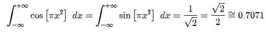

The chirp is an oscillating function whose frequency varies with position. The functional form of a chirp is a sinusoid whose argument (phase) is a monomial (such as a quadratic or cubic function). Because the frequency of a sinusoid is proportional to the derivative of its phase, and the phase varies spatially, the chirp function has a frequency that also varies spatially. The most commonly used chirp function is the quadratic phase chirp, whose frequency varies linearly with position.
Parameters:
Support: infinite
Area: varies. The areas of two common chirp functions are shown below:

Symmetry: even
Read more about chirp functions at: